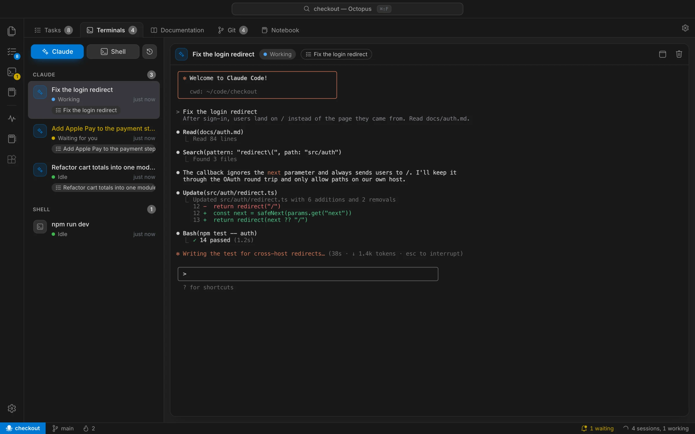
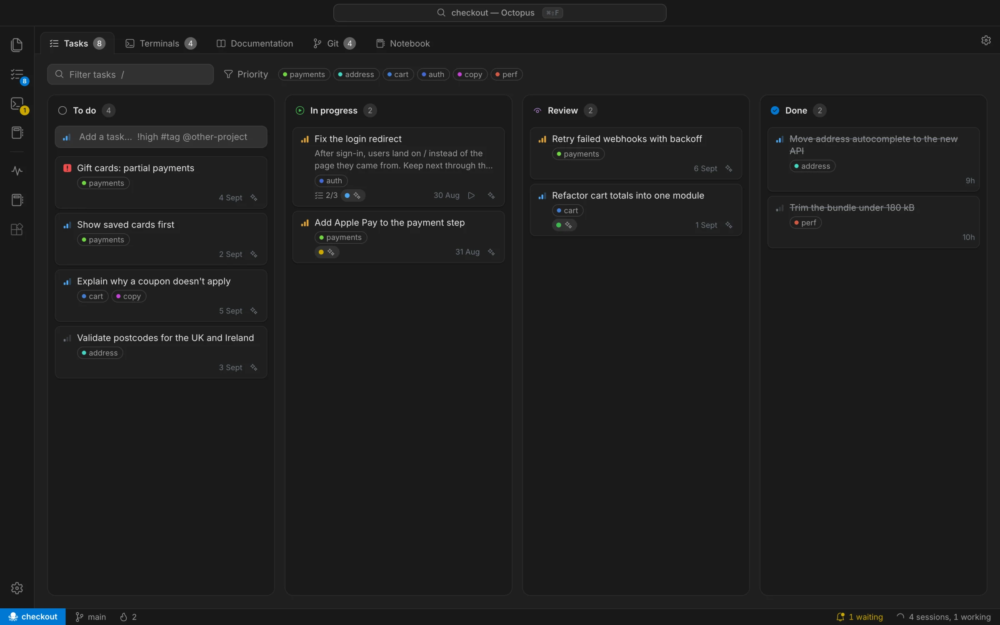
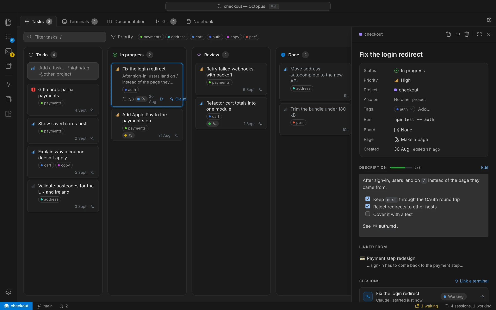
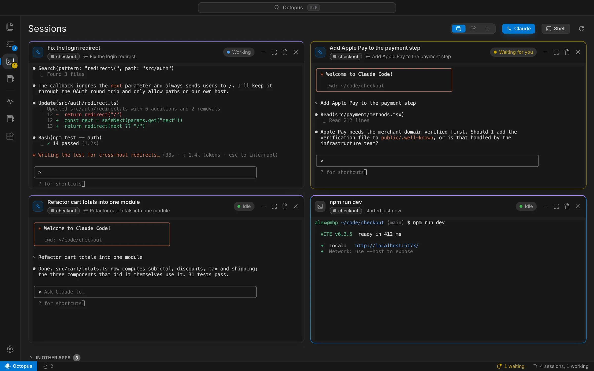
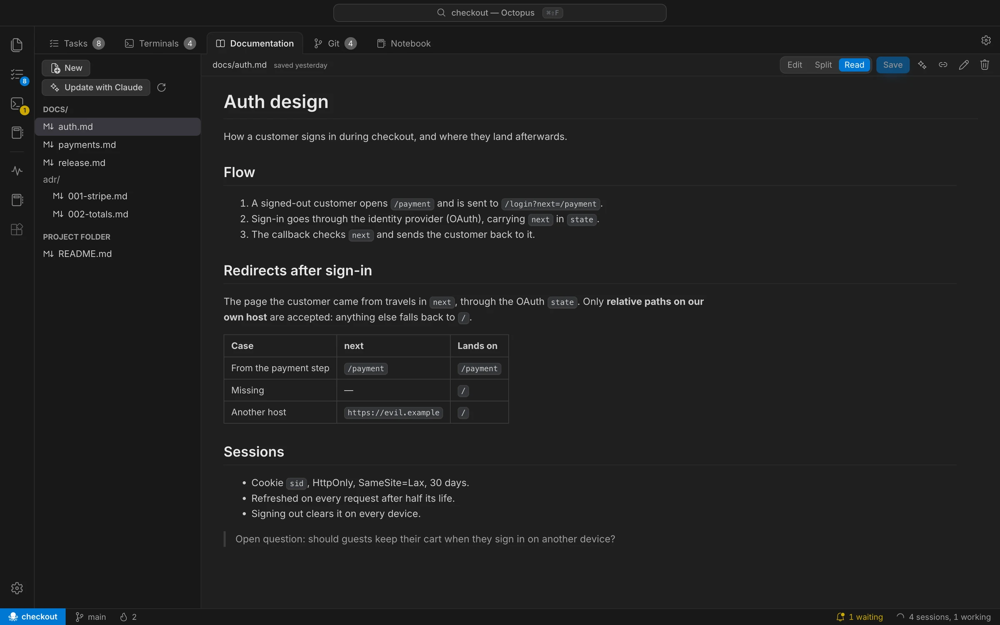
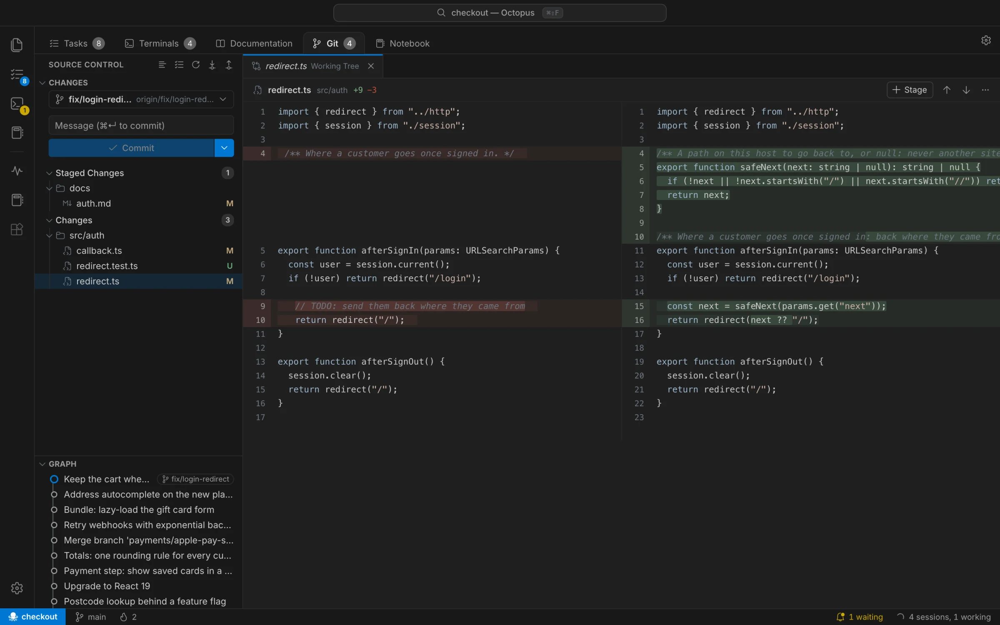
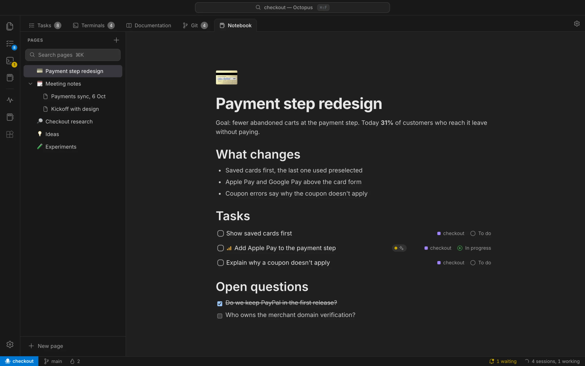
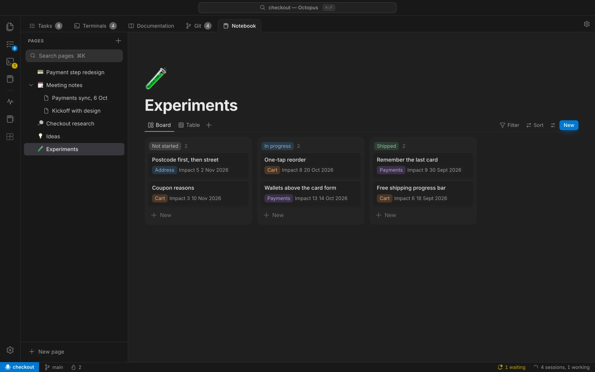
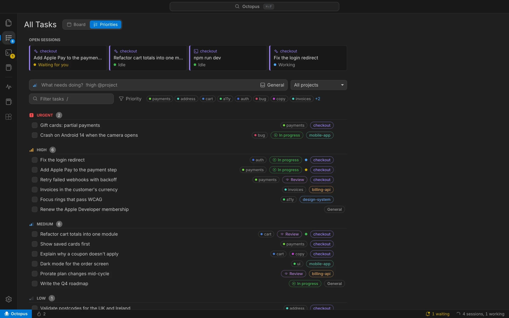
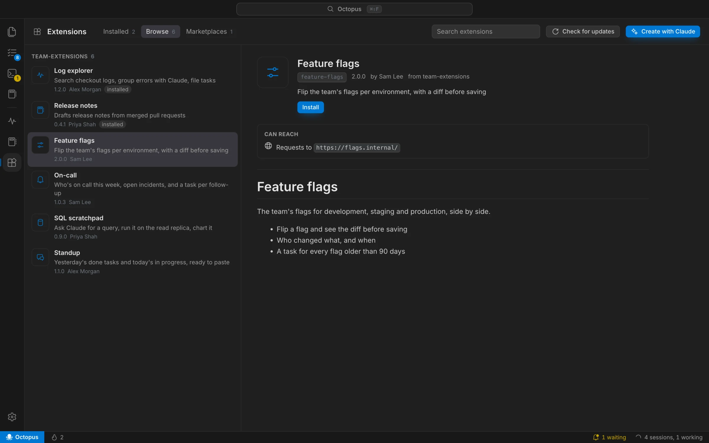

The work hub for building with Claude Code.
Every project's tasks, Claude sessions, docs and git in one Mac app. Hand a task to Claude and Octopus handles the rest: the context, the tracking, the status updates.
Free. For Apple Silicon and Intel Macs.

Tasks
All your tasks in one place, shared with your team.
Each project has its own board, saved in its repository as plain Markdown. It syncs through git with no extra service, and when Claude or a teammate changes a task, the board updates by itself.
- Add a task in one line:
Fix the redirect !high #auth - One file per task, so no merge conflicts
- Priorities, tags, checklists and filters

Claude on a task
Hand off a task. Octopus does the busywork.
One click starts Claude Code in the right folder, already briefed with the task, its checklist and every doc and page it links to. The task moves to In progress, then to Review when Claude is done. No copying, pasting or updating by hand.
- Linked docs, pages and tasks go into Claude's brief
- A check command, like
npm test, that moves the task when it passes - Every session and run, recorded on the task

Sessions
Every session in one view. Octopus tells you which one needs you.
All your Claude Code sessions and shells, across projects, each showing its state. Run several at once and work on something else until one needs you.
- Working
- Waiting for you
- Idle
Sessions you started in Terminal, iTerm2, VS Code, Cursor, Warp or Ghostty show up too, filed under the right project.

Documentation
Docs right next to the work they describe.
The Markdown in your repository, one tab away from the tasks and terminals. Link a doc to a task and Claude reads it before it starts; ask, and Claude updates it when the code changes. With Mido installed you get its full editor, with diagrams, math and comments.
- Read, edit or both side by side
- Rename a document and every link to it follows

Git and review
Review and ship without leaving the hub.
See exactly what Claude changed, side by side, then stage, commit and push from the same window. The review page shows every changed file at once and remembers which ones you've read.
- Commit, push, pull, merge and resolve conflicts
- Branches and history at a glance

Notebooks
Specs, notes and plans, connected to the work.
Write the spec where the tasks are. A to-do on a page is a real task on the board, kept in sync both ways, and databases track everything else with table, board, list and calendar views.
- Slash commands, code blocks, callouts and links
- Relations, rollups and formulas in databases


Priorities
One list of what's next, across every project.
Every open task from every project, sorted by priority, with your running sessions on top. Start your day here and pick what to hand off next. Tasks that belong to no project live here too.

Small automations that add up.
- Search everything
- Find any project, task, page, document or session from one box: ⌘⇧F.
- More than one Claude account
- Personal in one project, work in another. Every session starts and resumes in the right account by itself.
- Pick up where you left off
- Your sessions come back after a restart, and Claude resumes the conversation it was in.
- Terminals in their own window
- Pop a session out to its own window. Close the window and it goes back where it was.
- Links between everything
- Tasks, pages and docs link to each other with plain Markdown, and each one lists what links back to it.
- Themes
- Dark and Light Modern, GitHub, Dracula, Nord and Solarized, or follow macOS.
Extensions
Bring the rest of your tools into the hub.
Need your logs, an internal API or a standup summary next to your tasks? Describe it, and Claude builds it as a new section of Octopus while you watch it take shape.

-
Create with Claude
Say what you need. Claude writes it next to a live preview, and you refine it by asking.
-
Approve what it can reach
An extension only gets the sites, Claude access, tasks or docs it asks for, and only after you say yes.
-
Share with your team
Publish it to your team's marketplace, any git repository. Teammates install it in one click and get every update.
// index.html of an extension: no build step const res = await octopus.http.fetch("https://logs.internal/api/errors"); const summary = await octopus.claude.ask("Group these errors by cause: " + res.text()); await octopus.tasks.create({ title: "Fix the top error", body: summary });
Bring all your work into one place.
Looking up the latest version…
- macOS on Apple Silicon or Intel
- Claude Code installed on your Mac
- Optional: Mido, for the full documentation editor
macOS says Octopus can't be opened
Until builds are notarized by Apple, macOS asks the first time. Open System Settings › Privacy & Security and choose Open Anyway, or run:
xattr -dr com.apple.quarantine /Applications/Octopus.app